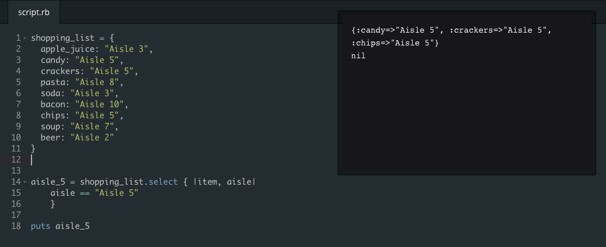

Arrays Versus Hashes
Shopping Lists
August 13th, 2015
Arrays and hashes share a lot of similarities that can make it hard to distinguish the differences between them. They both specialize in storing objects in a way that allows users to easily add, remove, and retrieve those objects. Additionally, the processes to manipulate and interact with arrays and hashes are very similar because they use a lot of the same methods (.new, [], etc.). However, despite these over-arching commonalities, arrays and hashes are built for different purposes and I hope to illuminate those differences enough for you to fully understand their innate differences.
**The Commonalities and Differences sections are a bit more technical. So for the less nerdy, first read the Conclusion section, and if you are feeling ambitious, try the more technical sections.
Commonalities:
Because arrays and hashes both store objects, they use a lot of the same methods to create and manipulate.
- Both arrays and hashes can be created using either the literal constructor or the .new method.
- Objects in both can be retrieved and overwritten using the bracket method ( [] )
- As collections of objects, they can be combine, merge, or overwrite one another.
Differences:
As you can see, the strongest commonality—the storage of objects—is what makes arrays and hashes seem so intimately similar. However, they are used for inherently different purposes. An array is an indexed and ordered collection of objects. By organizing the objects based on an index, the nature of arrays revolves around order and manipulating/sorting that order to fit a purpose. Additionally, because the benefits of an array is the ease with which objects can be organize and reorganized using a numeric system, array have a tendency to collect objects that are closely tied to one another. Although an array can hold many different types of objects, sets of arrays are often a similar type, ready to be sorted and ranked.
Hashes, on the other hand, are a non-numerical collection of objects that mainly depend on a key/key-value-pair system. By tying a key with a value, hashes are more like dictionaries for people searching for more information of a key object.
Conclusion:
In the end, the source of an array and hashes similarities stems in the fact that they are objects that collect and store objects. Their differences begin when you focus on how they store and retrieve those objects. And as a result of those retrieval differences, they are inherently used for different tasks.
A good way to think about the differences is by focusing on how shopping lists are created as opposed to how they are used. An array is a great way to store and add items into a shopping list. You can order them and sort them however you want so that you can see what you need or what you might have missed.
However, when you are actually shopping, you may want more information than a list. Hashes allow you to get more of that information. Imagine if every item on that shopping list came with a value that told you which aisle they can be found. You can even pull only the list of items based on the aisle (.select method).
